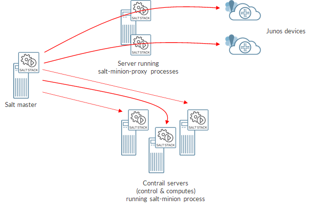
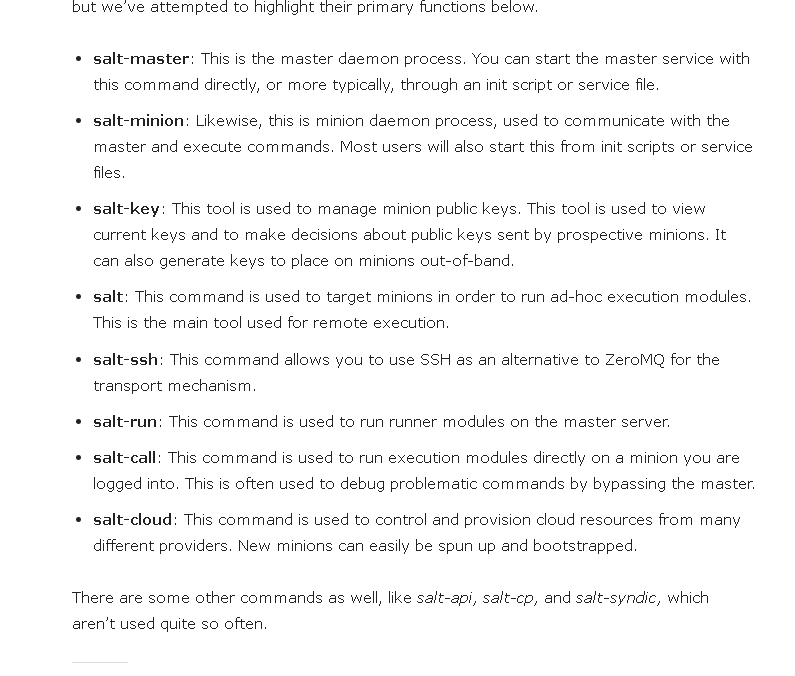

Salt

Salt, also known as SaltStack, is an open-source configuration management and remote execution tool. It allows you to automate the management and configuration of your infrastructure, including servers, network devices, cloud instances, and more. Here's why you might use Salt:
-
Configuration Management: Salt allows you to define the desired state of your infrastructure using declarative configuration files. You can specify how each component should be configured, and Salt will ensure that your systems remain in the desired state.
-
Automation: With Salt, you can automate repetitive tasks such as software installation, configuration updates, and application deployments. This helps save time and reduces the risk of human error.
-
Remote Execution: Salt enables you to execute commands and run scripts across your infrastructure from a central location. This is particularly useful for tasks that need to be performed on multiple machines simultaneously.
-
Scalability: Salt is designed to scale to large infrastructures, making it suitable for managing complex environments with thousands of nodes.
-
Flexibility: Salt offers a high degree of flexibility and extensibility. You can extend its functionality using custom modules and states, allowing you to tailor it to your specific requirements.
Overall, Salt provides a powerful platform for automating and managing your IT infrastructure, improving efficiency, reliability, and consistency across your environment.
To install SaltStack on Ubuntu, you can follow these steps:
- Update Package Index:
sudo apt update
- Install Salt Master:
sudo apt install salt-master
- Install Salt Minion (if needed):
If you want to set up a minion on the same machine, you can install it:
sudo apt install salt-minion
-
Configure Salt Master (Optional):
You might need to configure the Salt Master settings based on your requirements. The configuration file is typically located at/etc/salt/master. -
Start and Enable Salt Master:
sudo systemctl start salt-master
sudo systemctl enable salt-master
- Start and Enable Salt Minion (if installed):
If you installed the minion, start and enable it as well:
sudo systemctl start salt-minion
sudo systemctl enable salt-minion
- Verify Installation:
You can check the status of the Salt Master and Minion to ensure they are running without any errors:
sudo systemctl status salt-master
sudo systemctl status salt-minion
That's it! You've now installed SaltStack on your Ubuntu machine. You can proceed with configuring and managing your Salt infrastructure as needed.

SaltStack and Kubernetes are both powerful tools used in managing IT infrastructure, but they serve different purposes and operate at different layers of the technology stack. Here’s a breakdown of the primary differences between them:
-
Purpose and Focus:
-
SaltStack: SaltStack (now known as Salt due to its acquisition by VMware) is primarily an IT automation and configuration management tool. It's used to automate the configuration of software applications and infrastructure, deploy applications, and manage systems at scale. Salt can automate repetitive tasks, enforce configurations across diverse environments, and manage both cloud and on-premises resources.
-
Kubernetes: Kubernetes is an orchestration system for Docker containers. It focuses on the deployment, scaling, and management of containerized applications. Kubernetes helps you manage complex applications that are broken down into microservices across a cluster of machines.
-
Functionality:
-
SaltStack: Provides features like remote execution, configuration management, and event-driven automation. It can control a large number of systems simultaneously without manual intervention.
-
Kubernetes: Manages the lifecycle of containerized applications using methods such as deployment scheduling, load balancing, and rolling updates. It handles the health of applications and automatically replaces containers that fail.
-
Architecture:
-
SaltStack: Uses a master-minion (or master-agent) architecture where the central master sends commands to the minions, which then execute these commands.
-
Kubernetes: Operates on a cluster architecture consisting of a master node (or multiple master nodes for high availability) that manages the cluster, and worker nodes that run the containerized applications.
-
Use Cases:
-
SaltStack: Used for configuration management in both development and production environments, infrastructure automation, and as part of DevOps toolchains.
-
Kubernetes: Primarily used in environments where applications are developed as microservices. It’s well-suited for continuous integration and continuous deployment (CI/CD) environments.
-
Scalability:
-
SaltStack: Scalable in terms of managing thousands of servers.
-
Kubernetes: Designed to handle tens of thousands of containers across multiple hosts, providing robust tools for managing large-scale deployments.
-
Community and Ecosystem:
-
SaltStack: Has a strong community focused on configuration management and automation.
-
Kubernetes: Supported by a large community led by the Cloud Native Computing Foundation (CNCF). It has a vast ecosystem of tools and extensions.
In summary, while SaltStack is focused on automating and managing the configuration of servers and software, Kubernetes is designed to manage containerized applications at scale across a cluster. They can be used together, where Kubernetes handles the container orchestration and SaltStack manages underlying infrastructure configurations.
Salt (formerly SaltStack) is a prominent tool in the configuration management and infrastructure automation space. It competes with several other tools that offer similar functionalities but differ in their approach, features, and complexity. Here are some of the main competitors of Salt:
-
Ansible:
-
Description: Ansible is a simple and popular open-source IT automation engine that automates cloud provisioning, configuration management, application deployment, intra-service orchestration, and many other IT needs. It uses a very simple, readable language (YAML) to describe automation jobs in "playbooks".
-
Key Features: No agents required on managed nodes (agentless), uses SSH for communication, easy to learn.
-
Puppet:
-
Description: Puppet is an open-source software configuration management and deployment tool. It's most commonly used on Linux and Windows to pull the strings on multiple application servers at once.
-
Key Features: Puppet uses a master-agent model and includes its own declarative language to describe system configuration.
-
Chef:
-
Description: Chef is another powerful automation platform that transforms infrastructure into code. It’s used to streamline the task of configuring and maintaining a company's servers, and can integrate with cloud-based platforms to automatically provision and configure new machines.
-
Key Features: It uses a master-agent model, and its configuration recipes are written in Ruby.
-
Terraform:
-
Description: Although primarily known for its capabilities in infrastructure as code, Terraform also overlaps with some of Salt's functionalities in terms of managing infrastructure. It allows users to define both cloud and on-premises resources in human-readable configuration files that can be versioned and reused.
-
Key Features: Emphasizes immutability and reproducibility of infrastructure, works well with multiple cloud providers.
-
CFEngine:
-
Description: CFEngine is a pioneering tool in the IT automation market, known for its performance and scalability. It is used to automate large-scale, complex infrastructures with minimal resources.
-
Key Features: Lightweight and highly scalable, uses an agent-based model with a proprietary policy language.
Each of these tools has its strengths and areas of best fit, depending on the specific needs of the organization, such as ease of use, scalability, community support, and the complexity of tasks they need to automate. For example, Ansible is often praised for its simplicity and easy learning curve, while Puppet and Chef offer more mature environments but with a steeper learning curve. Terraform, while not a direct competitor in the configuration management space, is increasingly used alongside these tools for its powerful cloud provisioning capabilities.
Imported from rifaterdemsahin.com · 2024